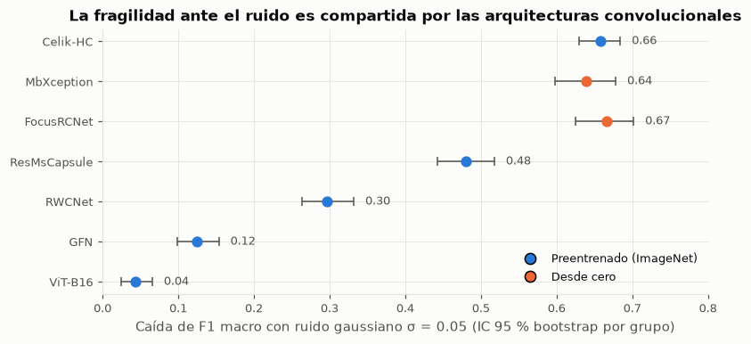
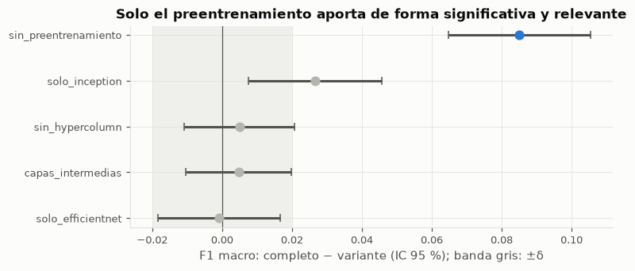

12. Paper guía: réplica, limitaciones y ablación#
El paper guía es Celik (2025), que propone el modelo Celik-HC. Lo elegimos por tres motivos: es el único estudio del corpus con código público completo, reporta la mayor accuracy en TrashNet (99.40 %) y combina dos de las familias más usadas en la literatura, EfficientNet e Inception, con una fusión multinivel. En este capítulo lo describimos, replicamos su resultado con su propio código, validamos el pipeline con los siete modelos publicados, cuantificamos dos limitaciones y aislamos el aporte de sus componentes.
12.1 Referencia y descripción del modelo#
Celik, G. (2025). Multi-layer feature fusion for high-accuracy solid waste classification using a hybrid deep learning model. The Visual Computer, 41, 10227–10249. https://doi.org/10.1007/s00371-025-04031-3. Código: GaffariCelik/SolidWasteClassification
Arquitectura. Una imagen \(x \in \mathbb{R}^{224 \times 224 \times 3}\) entra en paralelo a EfficientNet-B0 e InceptionV3, ambas con pesos de ImageNet. De cada red se toman dos mapas de rasgos profundos:
EfficientNet-B0: las salidas de
block6d_addytop_activation;InceptionV3: las salidas de
mixed8ymixed10.
Cada mapa se reduce con global average pooling y los cuatro vectores se concatenan. Esa es la hypercolumn:
Cinco capas densas con ReLU (512, 256, 128, 64 y 6 neuronas) se entrenan con entropía cruzada. Después, la salida de 64 dimensiones \(z(x)\) se usa como embedding para un clasificador XGBoost, \(\hat y = \mathrm{XGB}(z(x))\), que suma árboles ajustados al gradiente de la pérdida, \(F_{m+1}(x) = F_m(x) - \gamma\, h_m(x)\).
Supuestos del modelo. Los rasgos de distintas profundidades y de dos arquitecturas son complementarios. Un clasificador por boosting sobre el embedding separa mejor las clases que la softmax. El conjunto de prueba es una muestra independiente de la distribución de interés.
Relación con el benchmark. Celik-HC comparte con RWCNet la idea de fusionar dos CNN preentrenadas y con GFN la de combinar escalas. Es el único modelo que añade un clasificador de machine learning clásico. En el benchmark ocupa el cuarto lugar (capítulo 13).
12.2 Réplica bajo las condiciones originales#
Protocolo original. Reprodujimos el código oficial en PyTorch:
partición aleatoria 80/20 sobre las 2527 imágenes con
random_state = 32(506 de prueba);40 épocas, Adam con tasa de 1e-3, lote de 128, sin aumento de datos;
XGBoost con
random_state = 101;la época se elige con la mayor accuracy sobre el mismo 20 % que se reporta como prueba, igual que en el repositorio.
Protocolo estricto. Es idéntico, salvo que la época se elige con un 10 % de validación interno separado del entrenamiento. El 20 % de prueba se evalúa una sola vez.
Cada protocolo se repitió con 5 semillas.
Criterio de éxito, fijado antes de ejecutar. La réplica tiene éxito si la accuracy publicada (0.994) cae dentro del IC 95 % bootstrap de la accuracy de prueba de la corrida.
rep = pd.read_csv(SUM / "replicacion_paper_guia.csv")
def resumen(g):
m, s, n = g.mean(), g.std(ddof=1), len(g)
h = st.t.ppf(0.975, n - 1) * s / np.sqrt(n)
return f"{m:.3f} ± {s:.3f} [{m - h:.3f}, {m + h:.3f}]"
tab = rep.groupby("protocol").agg(
accuracy_XGBoost=("accuracy", resumen), f1_macro=("f1_macro", resumen),
accuracy_softmax=("accuracy_head", resumen), mejor_epoca=("best_epoch", "mean"),
corridas_con_exito=("reportado_en_ic", "sum")).loc[["original", "estricto"]]
display(tab)
display(rep[["protocol", "seed", "best_epoch", "selection_accuracy", "accuracy", "ic_lo", "ic_hi", "reportado_en_ic"]].round(4))
| accuracy_XGBoost | f1_macro | accuracy_softmax | mejor_epoca | corridas_con_exito | |
|---|---|---|---|---|---|
| protocol | |||||
| original | 0.925 ± 0.005 [0.919, 0.930] | 0.904 ± 0.007 [0.895, 0.914] | 0.941 ± 0.005 [0.935, 0.946] | 20.8 | 0 |
| estricto | 0.896 ± 0.010 [0.884, 0.909] | 0.872 ± 0.006 [0.865, 0.879] | 0.909 ± 0.013 [0.893, 0.925] | 23.0 | 0 |
| protocol | seed | best_epoch | selection_accuracy | accuracy | ic_lo | ic_hi | reportado_en_ic | |
|---|---|---|---|---|---|---|---|---|
| 0 | original | 0 | 13 | 0.9368 | 0.9249 | 0.9012 | 0.9466 | False |
| 1 | estricto | 0 | 21 | 0.9557 | 0.8972 | 0.8696 | 0.9229 | False |
| 2 | original | 1 | 15 | 0.9407 | 0.9209 | 0.8972 | 0.9427 | False |
| 3 | estricto | 1 | 27 | 0.9458 | 0.8953 | 0.8676 | 0.9209 | False |
| 4 | original | 2 | 29 | 0.9486 | 0.9308 | 0.9071 | 0.9506 | False |
| 5 | estricto | 2 | 4 | 0.9458 | 0.8854 | 0.8577 | 0.9130 | False |
| 6 | original | 3 | 16 | 0.9387 | 0.9269 | 0.9032 | 0.9466 | False |
| 7 | estricto | 3 | 34 | 0.9507 | 0.9130 | 0.8874 | 0.9368 | False |
| 8 | original | 4 | 31 | 0.9387 | 0.9190 | 0.8933 | 0.9427 | False |
| 9 | estricto | 4 | 29 | 0.9113 | 0.8913 | 0.8636 | 0.9170 | False |
La réplica no tiene éxito. El criterio no se cumple en ninguna de las 10 corridas. Con el protocolo original obtenemos una accuracy de 0.925 ± 0.005: 6.9 puntos por debajo de la publicada, y el IC 95 % de cada corrida excluye 0.994. La discrepancia no se explica por casi-duplicados entre las particiones del protocolo original: solo 1 de las 506 imágenes de prueba tiene un casi-duplicado en entrenamiento (entregable2/results/replication/protocol.json).
Atribuimos la brecha a causas que el experimento no separa:
el cambio de Keras a PyTorch, con pesos de ImageNet de distinta procedencia;
un preprocesamiento no documentado en el repositorio;
la versión del conjunto de datos y las semillas.
La brecha es grande (unas 14 desviaciones estándar entre semillas), lo que vuelve poco probable que se deba solo a la aleatoriedad del entrenamiento.
o = rep[rep.protocol == "original"].set_index("seed"); e = rep[rep.protocol == "estricto"].set_index("seed")
filas = []
for met, nombre in [("accuracy", "Accuracy (XGBoost)"), ("f1_macro", "F1 macro (XGBoost)"), ("accuracy_head", "Accuracy (softmax)")]:
d = (o[met] - e[met]).to_numpy()
t = st.ttest_1samp(d, 0)
h = st.t.ppf(0.975, len(d) - 1) * d.std(ddof=1) / np.sqrt(len(d))
filas.append({"métrica": nombre, "original − estricto": d.mean(), "IC 95 % inf": d.mean() - h, "IC 95 % sup": d.mean() + h,
"t": t.statistic, "p": t.pvalue, "d_z": d.mean() / d.std(ddof=1)})
display(pd.DataFrame(filas).round(4))
print("¿La accuracy de selección coincide con la de prueba de la softmax en el protocolo original?",
bool(np.allclose(o.selection_accuracy, o.accuracy_head)))
| métrica | original − estricto | IC 95 % inf | IC 95 % sup | t | p | d_z | |
|---|---|---|---|---|---|---|---|
| 0 | Accuracy (XGBoost) | 0.0281 | 0.014 | 0.0421 | 5.5526 | 0.0051 | 2.4832 |
| 1 | F1 macro (XGBoost) | 0.0324 | 0.022 | 0.0428 | 8.6705 | 0.0010 | 3.8776 |
| 2 | Accuracy (softmax) | 0.0320 | 0.012 | 0.0521 | 4.4354 | 0.0114 | 1.9836 |
¿La accuracy de selección coincide con la de prueba de la softmax en el protocolo original? True
Validación del pipeline con los siete modelos publicados. La réplica responde dos preguntas distintas: si el resultado publicado de Celik-HC se reproduce, y si nuestro pipeline experimental es fiable. Para la segunda comparamos la accuracy de prueba de los siete modelos publicados, obtenida con el mismo pipeline (código, partición, preprocesamiento y evaluación), con la que reporta cada artículo. Si el pipeline tuviera un error sistemático, todos los modelos quedarían por debajo de su valor publicado.
mc = pd.read_csv(SUM / "metricas_por_corrida.csv")
publicada = {"RWCNet": 95.01, "GFN": 94.21, "ViT-B16": 96.98, "ResMsCapsule": 91.41, "Celik-HC": 99.40,
"MbXception": 94.34, "FocusRCNet": 92.0}
causa = {"RWCNet": "Reproduce el valor publicado",
"GFN": "Reproduce el valor publicado",
"ViT-B16": "Variante no declarada (se asume B/16); lote de 32 en lugar de 512",
"ResMsCapsule": "No comparable: el artículo usa 4 clases",
"Celik-HC": "Época elegida con la prueba (+2.8 puntos, sección 12.3) y factores no aislados",
"MbXception": "Entrada de 224 en lugar de 229 píxeles; tope de épocas alcanzado",
"FocusRCNet": "Valor medido en validación, con entrada de 380 píxeles; tope de épocas alcanzado"}
val = []
for m, p in publicada.items():
a = 100 * mc[mc.model == m].accuracy
val.append({"modelo": m, "accuracy publicada (%)": p, "accuracy obtenida (%)": f"{a.mean():.1f} ± {a.std(ddof=1):.1f}",
"diferencia (puntos)": round(a.mean() - p, 1), "lectura": causa[m]})
display(pd.DataFrame(val).set_index("modelo"))
| accuracy publicada (%) | accuracy obtenida (%) | diferencia (puntos) | lectura | |
|---|---|---|---|---|
| modelo | ||||
| RWCNet | 95.01 | 95.2 ± 0.7 | 0.2 | Reproduce el valor publicado |
| GFN | 94.21 | 93.5 ± 1.1 | -0.7 | Reproduce el valor publicado |
| ViT-B16 | 96.98 | 94.4 ± 1.1 | -2.6 | Variante no declarada (se asume B/16); lote de... |
| ResMsCapsule | 91.41 | 91.1 ± 1.2 | -0.3 | No comparable: el artículo usa 4 clases |
| Celik-HC | 99.40 | 92.6 ± 1.0 | -6.8 | Época elegida con la prueba (+2.8 puntos, secc... |
| MbXception | 94.34 | 87.4 ± 1.3 | -6.9 | Entrada de 224 en lugar de 229 píxeles; tope d... |
| FocusRCNet | 92.00 | 83.2 ± 1.1 | -8.8 | Valor medido en validación, con entrada de 380... |
El pipeline queda validado. Con el mismo código y el mismo protocolo, RWCNet reproduce su valor publicado (95.2 % frente a 95.01 %) y GFN queda a 0.7 puntos (93.5 % frente a 94.21 %). Las demás diferencias son heterogéneas (de −2.6 a −8.8 puntos) y cada una se asocia a desviaciones documentadas en el capítulo 11 o, en Celik-HC, al sesgo de selección de la sección 12.3. Ese patrón es el contrario al de un error sistemático del pipeline, que afectaría a todos los modelos por igual.
Por eso la brecha de Celik-HC se interpreta como un hallazgo sobre el artículo y no como un fallo de la implementación. La réplica de su resultado no tiene éxito según el criterio fijado a priori, y el pipeline con el que se evaluaron los diez modelos del benchmark reproduce los resultados publicados cuando estos son reproducibles.
12.3 Limitación 1: selección de la época con el conjunto de prueba#
El código oficial guarda el modelo de la época con mayor accuracy sobre el conjunto que luego reporta como prueba. La celda anterior muestra el mecanismo: en el protocolo original, la accuracy usada para elegir la época es idéntica a la accuracy de prueba de la softmax, porque ambas se calculan sobre el mismo conjunto. Elegir la época de esta forma infla la accuracy en 2.8 puntos (IC 95 % [1.4, 4.2], t pareada con 5 semillas, \(p = 0.005\)) y el F1 macro en 3.2 puntos (IC [2.2, 4.3], \(p = 0.001\)). Este sesgo afecta a cualquier modelo seleccionado así, no solo al paper guía. Por eso nuestro protocolo común elige la época con validación (capítulo 11).
12.4 Limitación 2: fragilidad ante ruido gaussiano#
La segunda limitación es la que sirve de punto de partida para el modelo propio de la etapa siguiente. Ante ruido gaussiano de \(\sigma = 0.05\) sobre la imagen en [0, 1], antes de normalizar, el F1 macro de Celik-HC cae de 0.914 a 0.255. La cuantificamos con un IC 95 % bootstrap que remuestrea grupos de casi-duplicados del conjunto de prueba, con 2000 remuestreos, promediando las 8 semillas en cada remuestreo. Para verificar si la limitación es propia del paper guía o compartida por su familia, repetimos el cálculo en los otros modelos del benchmark.
Las perturbaciones con las que se cuantifica esta limitación (ruido gaussiano con \(\sigma = 0.05\) y \(0.10\)) están fijadas en el preregistro. Su análisis como limitación del paper guía es exploratorio.
ci = pd.read_csv(COMP / "robustez_caidas_ic.csv")
r05 = ci[ci.perturbacion == "ruido_0.05"].set_index("model")
orden = ["Celik-HC", "MbXception", "FocusRCNet", "ResMsCapsule", "RWCNet", "GFN", "ViT-B16"]
display(r05.loc[orden, ["caida_f1", "ic_lo", "ic_hi"]].round(3).rename(columns={"caida_f1": "caída de F1 (σ = 0.05)"}))
rb = pd.read_csv(SUM / "robustez.csv")
w = rb[rb.perturbacion.isin(["limpio", "ruido_0.05"])].pivot_table(index=["model", "seed"], columns="perturbacion", values="f1_macro")
w["caida"] = w["limpio"] - w["ruido_0.05"]
cd = w["caida"].unstack(0)
filas = []
for m in ["MbXception", "FocusRCNet", "ResMsCapsule", "RWCNet", "GFN", "ViT-B16"]:
d = (cd["Celik-HC"] - cd[m]).to_numpy()
filas.append({"contraste": f"Celik-HC − {m}", "diferencia de caída": d.mean(), "p_t": st.ttest_1samp(d, 0).pvalue})
f = pd.DataFrame(filas)
from statsmodels.stats.multitest import multipletests
f["p_Holm"] = multipletests(f.p_t, method="holm")[1]
display(f.round(4))
| caída de F1 (σ = 0.05) | ic_lo | ic_hi | |
|---|---|---|---|
| model | |||
| Celik-HC | 0.659 | 0.630 | 0.684 |
| MbXception | 0.639 | 0.598 | 0.678 |
| FocusRCNet | 0.666 | 0.625 | 0.702 |
| ResMsCapsule | 0.480 | 0.443 | 0.518 |
| RWCNet | 0.297 | 0.263 | 0.332 |
| GFN | 0.124 | 0.098 | 0.154 |
| ViT-B16 | 0.044 | 0.025 | 0.066 |
| contraste | diferencia de caída | p_t | p_Holm | |
|---|---|---|---|---|
| 0 | Celik-HC − MbXception | 0.0193 | 0.6712 | 1.0000 |
| 1 | Celik-HC − FocusRCNet | -0.0078 | 0.7887 | 1.0000 |
| 2 | Celik-HC − ResMsCapsule | 0.1783 | 0.0016 | 0.0048 |
| 3 | Celik-HC − RWCNet | 0.3614 | 0.0001 | 0.0003 |
| 4 | Celik-HC − GFN | 0.5342 | 0.0000 | 0.0000 |
| 5 | Celik-HC − ViT-B16 | 0.6148 | 0.0000 | 0.0000 |
fig, ax = plt.subplots(figsize=(7.5, 3.6))
y = np.arange(len(orden))
for i, m in enumerate(orden):
r = r05.loc[m]
ax.errorbar(r.caida_f1, i, xerr=[[r.caida_f1 - r.ic_lo], [r.ic_hi - r.caida_f1]], fmt="o", color=FG.color_regimen(m),
ecolor=FG.INK2, elinewidth=1, capsize=3, ms=7)
ax.text(r.ic_hi + 0.015, i, f"{r.caida_f1:.2f}", va="center", fontsize=8.5, color=FG.INK2)
ax.set_yticks(y, orden); ax.invert_yaxis(); ax.set_xlim(0, 0.8)
ax.set_xlabel("Caída de F1 macro con ruido gaussiano σ = 0.05 (IC 95 % bootstrap por grupo)")
ax.set_title("La fragilidad ante el ruido es compartida por las arquitecturas convolucionales")
FG.leyenda_regimen(ax, loc="lower right"); plt.tight_layout(); plt.show()

La limitación no es exclusiva del paper guía:
CNN pura: MbXception, FocusRCNet, ResMsCapsule y RWCNet pierden entre 0.30 y 0.67 de F1, con intervalos que excluyen cero, igual que los tres modelos base del capítulo 5.
Atención global: los dos modelos con un codificador Transformer degradan mucho menos. GFN pierde 0.12 y ViT-B16 0.04.
Prueba pareada: la caída de Celik-HC supera a la de los demás modelos, salvo MbXception y FocusRCNet, con \(p\) Holm < 0.05.
La fragilidad ante el ruido es una propiedad de las arquitecturas convolucionales entrenadas sin ruido en el aumento de datos. Esto la vuelve un candidato natural para el modelo propio, en línea con los mecanismos M1 (destilación), M2 (entrenamiento con ruido) y M4 (atención global) de la sección 10.8.
12.5 Aporte de XGBoost#
El artículo atribuye a XGBoost una mejora de la clasificación final. En nuestras 8 semillas del benchmark comparamos, sobre las mismas corridas, la salida de XGBoost con la de la cabeza softmax que la produce.
xs = pd.read_csv(SUM / "celik_xgb_vs_softmax.csv")
d = (xs.f1_macro_xgb - xs.f1_macro_softmax).to_numpy()
h = st.t.ppf(0.975, 7) * d.std(ddof=1) / np.sqrt(8)
print(f"F1 macro: XGBoost {xs.f1_macro_xgb.mean():.3f} frente a softmax {xs.f1_macro_softmax.mean():.3f}; "
f"diferencia {d.mean():.3f} [IC 95 % {d.mean() - h:.3f}, {d.mean() + h:.3f}], t pareada p = {st.ttest_1samp(d, 0).pvalue:.3f}, "
f"Wilcoxon p = {st.wilcoxon(d).pvalue:.3f}")
F1 macro: XGBoost 0.914 frente a softmax 0.924; diferencia -0.010 [IC 95 % -0.023, 0.002], t pareada p = 0.092, Wilcoxon p = 0.109
XGBoost no mejora a la softmax: la diferencia media es negativa (−0.010) y su intervalo incluye el cero. En la réplica también empeora la accuracy: −1.6 puntos con el protocolo original y −1.2 con el estricto. Mantuvimos XGBoost como salida oficial de Celik-HC para respetar el modelo publicado.
12.6 Ablación del paper guía#
Aislamos cinco componentes con 8 semillas por variante y el mismo protocolo y la misma configuración de hiperparámetros del modelo completo:
sin_hypercolumn: solo la última capa de cada red, sin fusión multinivel;
capas_intermedias: las capas del «Model_1» del artículo (
block4c,block5c,mixed6ymixed7);solo_efficientnet: sin InceptionV3;
solo_inception: sin EfficientNet-B0;
sin_preentrenamiento: ambas redes desde cero, con la tasa base y la normalización de ese régimen.
La diferencia es modelo completo − variante: un valor positivo indica que el componente retirado aporta. Las 5 comparaciones forman una familia con corrección de Holm. La ablación no figura en el preregistro y se declara exploratoria. Se ejecutó en la RTX 4060 y el modelo completo en la A100, con el mismo código, configuración y semillas.
ab = pd.read_csv(SUM / "ablacion.csv")
ab = ab[ab.variante.str.startswith("Celik-HC/")].copy()
ab["variante"] = ab.variante.str.replace("Celik-HC/", "")
display(ab[["variante", "f1_media", "f1_de", "dif_media", "ic_t_lo", "ic_t_hi", "p_t_holm", "p_wilcoxon_holm",
"relevante_y_significativa"]].round(4))
eq = pd.read_csv(COMP / "equivalencia_ablacion.csv") if (COMP / "equivalencia_ablacion.csv").exists() else None
if eq is not None:
display(eq[eq.variante.str.startswith("Celik-HC/")].round(4))
| variante | f1_media | f1_de | dif_media | ic_t_lo | ic_t_hi | p_t_holm | p_wilcoxon_holm | relevante_y_significativa | |
|---|---|---|---|---|---|---|---|---|---|
| 0 | capas_intermedias | 0.9092 | 0.0165 | 0.0047 | -0.0104 | 0.0199 | 1.0000 | 1.0000 | False |
| 1 | sin_hypercolumn | 0.9090 | 0.0121 | 0.0049 | -0.0108 | 0.0207 | 1.0000 | 1.0000 | False |
| 2 | sin_preentrenamiento | 0.8289 | 0.0196 | 0.0851 | 0.0647 | 0.1054 | 0.0001 | 0.0391 | True |
| 3 | solo_efficientnet | 0.9148 | 0.0096 | -0.0008 | -0.0182 | 0.0166 | 1.0000 | 1.0000 | False |
| 4 | solo_inception | 0.8873 | 0.0139 | 0.0266 | 0.0075 | 0.0457 | 0.0526 | 0.1562 | False |
| base | variante | f1_variante | f1_de | f1_completo | ece_variante | dif_media | ic_t_lo | ic_t_hi | d_z | p_t | p_wilcoxon | p_tost | ic90_lo | ic90_hi | p_t_holm_familia | decision | |
|---|---|---|---|---|---|---|---|---|---|---|---|---|---|---|---|---|---|
| 0 | Celik-HC | Celik-HC/capas_intermedias | 0.9092 | 0.0165 | 0.9139 | 0.0573 | 0.0047 | -0.0104 | 0.0199 | 0.2602 | 0.4857 | 0.5469 | 0.0242 | -0.0074 | 0.0169 | 1.0000 | equivalente (TOST ±δ) |
| 1 | Celik-HC | Celik-HC/sin_hypercolumn | 0.9090 | 0.0121 | 0.9139 | 0.0576 | 0.0049 | -0.0108 | 0.0207 | 0.2615 | 0.4836 | 0.5469 | 0.0292 | -0.0077 | 0.0176 | 1.0000 | equivalente (TOST ±δ) |
| 2 | Celik-HC | Celik-HC/sin_preentrenamiento | 0.8289 | 0.0196 | 0.9139 | 0.1312 | 0.0851 | 0.0647 | 0.1054 | 3.4958 | 0.0000 | 0.0078 | 0.9999 | 0.0688 | 0.1014 | 0.0001 | significativa y relevante |
| 3 | Celik-HC | Celik-HC/solo_efficientnet | 0.9148 | 0.0096 | 0.9139 | 0.0550 | -0.0008 | -0.0182 | 0.0166 | -0.0400 | 0.9131 | 1.0000 | 0.0176 | -0.0148 | 0.0131 | 1.0000 | equivalente (TOST ±δ) |
| 4 | Celik-HC | Celik-HC/solo_inception | 0.8873 | 0.0139 | 0.9139 | 0.0794 | 0.0266 | 0.0075 | 0.0457 | 1.1662 | 0.0131 | 0.0391 | 0.7811 | 0.0113 | 0.0420 | 0.0526 | no concluyente |
fig, ax = plt.subplots(figsize=(7.2, 3.2))
abs_ = ab.sort_values("dif_media")
for i, r in enumerate(abs_.itertuples()):
sig = r.relevante_y_significativa
ax.errorbar(r.dif_media, i, xerr=[[r.dif_media - r.ic_t_lo], [r.ic_t_hi - r.dif_media]], fmt="o",
color=FG.SERIES[0] if sig else FG.NEUTRAL, ecolor=FG.INK2, capsize=3, ms=7)
ax.axvline(0, color=FG.INK2, lw=0.8); ax.axvspan(-0.02, 0.02, color=FG.GRID, alpha=0.5, lw=0)
ax.set_yticks(range(len(abs_)), abs_.variante); ax.set_xlabel("F1 macro: completo − variante (IC 95 %); banda gris: ±δ")
ax.set_title("Solo el preentrenamiento aporta de forma significativa y relevante")
plt.tight_layout(); plt.show()

Lo que sostiene el desempeño de Celik-HC es el preentrenamiento en ImageNet. Sin él, el F1 cae 0.085 (IC [0.065, 0.105], \(p\) Holm < 0.001), una diferencia significativa y relevante.
Ninguna de las demás variantes difiere de forma significativa del modelo completo, y tres de ellas son equivalentes dentro de \(\pm\delta\) (TOST, segunda tabla):
Fusión multinivel: quitar la hypercolumn o tomar capas intermedias cambia el F1 en 0.005 o menos, con TOST \(p = 0.029\) y \(0.024\).
Dos redes: usar solo EfficientNet-B0 da el mismo F1 (−0.001, TOST \(p = 0.018\)), con la mitad de los parámetros.
Solo InceptionV3: pierde 0.027, una diferencia que no resulta significativa tras Holm (\(p = 0.053\)).
Las contribuciones centrales del artículo (fusión multinivel, combinación de dos redes y XGBoost) no mejoran el modelo bajo un protocolo controlado. Junto con la réplica, estos resultados cuestionan la superioridad publicada y orientan el modelo propio hacia la robustez y no hacia más capas de fusión.
12.7 Síntesis para la etapa siguiente#
Hallazgo |
Evidencia |
Implicación para el modelo propio |
|---|---|---|
La accuracy publicada (99.4 %) no se reproduce |
Réplica: 92.5 % con el protocolo original |
Comparar siempre bajo el protocolo común y con varias semillas |
Elegir la época con la prueba infla el resultado |
+2.8 puntos de accuracy, IC [1.4, 4.2] |
Selección solo con validación |
La fusión multinivel, la segunda red y XGBoost no aportan |
Ablación y comparación con la softmax |
Partir de un único extractor preentrenado (EfficientNet-B0) |
Fragilidad ante ruido compartida por las CNN |
Caída de 0.66 en F1 (σ = 0.05), y de 0.30 a 0.67 en otras CNN |
Atacar la robustez: atención global, aumento con corrupciones o adaptación en prueba |